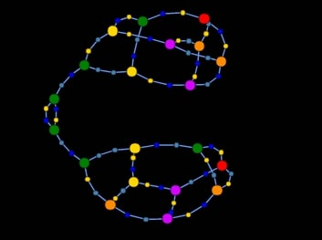
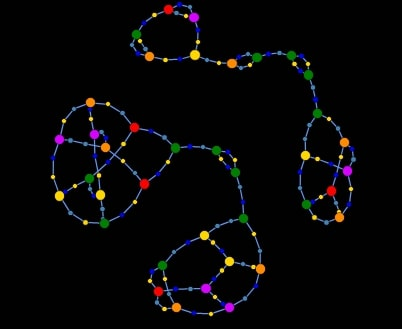
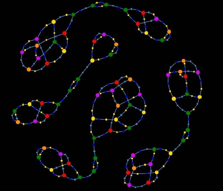

The JD replicator is a chemlambda molecule with the property that it produces a finite, but random length string of application A and fanout FOE nodes.
Differently from the Id molecule, the Omega molecule is a chemlambda quine. That means it reduces forever, it does not have a final shape.
If we let the JD replicator + Omega to reduce randomly, it produces a random number of pairs of Omega molecules, which are all in various stages of reduction themselves, and they will continue to reduce forever! Snapshots look like like this:

The ability of this replicator is that it produces copies of active molecules, while they continue to function. This is a far harder to achieve property than just replication. But Nature can do this, for sure: living cells reproduce while they also continue to have a metabolism. In Nature there is no clear separation between functioning (metabolism) and pure replication.
You can run the simulations by yourself, just use the lower part of this page.
This page is a response to the kind request of JD, the creator of metalambda.org, for his metaseminar 0 (link to be updated if transcript available).